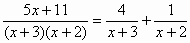

部分分式(II)
更新日期: 2012年2月17日
程式可以分解一個多項式分式為部分分式(Partial Fraction)，其中分子為是二次多項式 Ax2 + Bx + C，而分母為三次多項式，可以是 (x + a)(x + b)(x + c) 或 (x2 + bx + c)(x + c)，其中 A, B, C, a, b, c 均為實數。注意本程式的多項式全部以降冪排列(包括分式)。若果使用第二個程式更加可以計算分子為一次多項式(Ax+B)及分母二次多項式(x+a)(x+b)的情況。
第一個程式 (152 bytes)
?→M: ?→A: ?→B: ?→C: ?→D: ?→X: ?→Y:
M => Goto 0: Y - AX + DA2→M:
C - A => Goto 1: M◢ X - 2AD◢ D◢ Lbl 1:
(Y - CX + DC2)┘(AnsC - AnsB→X:
M┘( (C - A)(B - A + (A=B◢ D - X - Ans(A≠B◢ X◢
Lbl 0: (Y - CX + DC2)┘(B - CA + C2→M: D - M◢
X - AnsC - AM◢ M
第二個程式 (179 bytes，可同時計算分母為二次多項式(x+a)(x+b)的情況)
?→M: ?→A: ?→B: ?→C: ?→D: While M=2:
(D - AC)┘(B - A + (A=B◢ C - Ans(A≠B◢
WhileEnd: ?→X: ?→Y: While M:
(Y - CX + DC2)┘(B - CA + C2→M:
D - M◢ X - AnsC - AM◢ M◢ WhileEnd:
Y - AX + DA2M+: C - A: If Ans: Then
(Y - CX + DC2)┘(AnsC - AnsB→X:
M┘( (C - A)(B - A + (A=B◢ D - X - Ans(A≠B◢
X: Else M◢ X - 2AD◢ D
註: 程式以降冪的原則輸入係數，答案出現的分子係數與輸入分母的因子次序一致，若果分母輸入係數相同，答案則以分母的冪降冪出現。
例題1: 將下列分式代為部分分式

按 Prog 1 再按 0 EXE (0表示分母可以完全分解)
1 EXE - 2 EXE 3 EXE (先輸入分母係數，因為分母為三次，冪數較高)
2 EXE - 5 EXE - 13 EXE (分子係數，顯示第一項分式的分子為1)
EXE (顯示第二項分式的分子為 - 1)
EXE (顯示第三項分式的分子為 2)
所以答案為:
例題2: 將下列分式代為部分分式

按 Prog 1 再按 0 EXE (0表示分母可以完全分解)
3 EXE 3 EXE 2 EXE (分母因子係數，按降冪排列所以先輸入二次項的兩個3)
4 EXE 19 EXE 23 EXE (分子係數，顯示分母(x+3)2分母的分子為 -2)
EXE (顯示分母(x+3)的分子為 3)
EXE (顯示第三項分式的分子為 1)
所以答案為:
例題3: 將下列分式代為部分分式

按 Prog 1 再按 0 EXE (0表示分母可以完全分解)
2 EXE 2 EXE 2 EXE (先輸入分母因子的係數)
1 EXE 0 EXE 5 EXE (分子係數，顯示分母(x+2)3的分子為9)
EXE (顯示分母(x+2)2的分子為 - 4)
EXE (顯示分母(x+2)的分子為 1)
所以答案為:
例題4: 將下列分式代為部分分式

按 Prog 1 再按 1 EXE (1表示分母不可以完全分解)
2 EXE 3 EXE 2 EXE (輸入分母因子係數，按降冪所以先輸入二次項係數)
0 EXE 3 EXE - 27 EXE (分子係數，顯示二次分母的分子x係數為11)
EXE (顯示二次分母的分子常數項為 3)
EXE (顯示一次分母的分子為 -11)
計算完結後按 AC 終止程式
所以答案為:
例題5: 將下列分式化為部分分式。

只適用於第二個程式
按 Prog 1 再按 2 EXE (2表示分母為二次多項式(x+a)(x+b)的形式)
3 EXE 2 EXE (先輸入分母)
5 EXE 11 EXE (顯示第一個分式分子為4) EXE (顯示第二個分式分子為1)
計算完結後按 AC 終止程式
所以

例題6: 將下列分式化為部分分式。

只適用於第二個程式
按 Prog 1 再按 2 EXE (2表示分母為二次多項式(x+a)(x+b)的形式)
4 EXE 4 EXE (先輸入分母，相同數值表示分母為二次式)
2 EXE 11 EXE (顯示第一個分式分母為4) )
EXE (顯示第一個分式分子為3) EXE (顯示第二個分式分子為2)
計算完結後按 AC 終止程式
所以
註2: 若果分母因子不是 (x+a)(x+b)形式，要自行轉化為合適形式輸入，例如: (3x+4) 可轉化為 3(x+4/3)輸入即可。
返回 CASIO fx-50FH、fx-3650P II、fx-50FH II及fx-50F PLUS 程式集